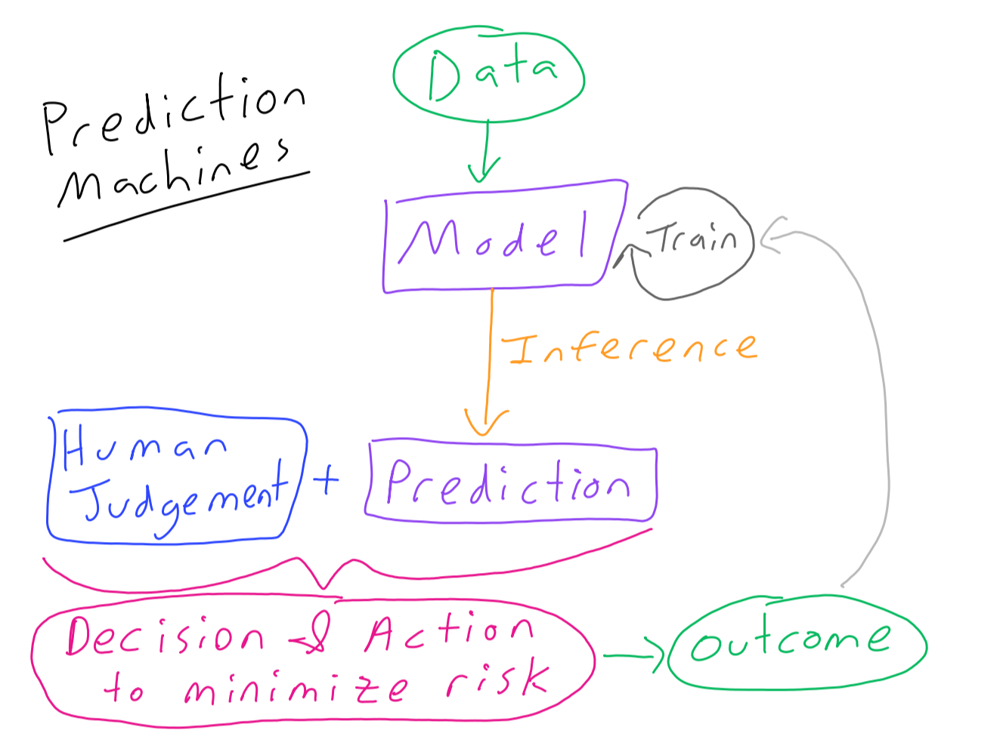
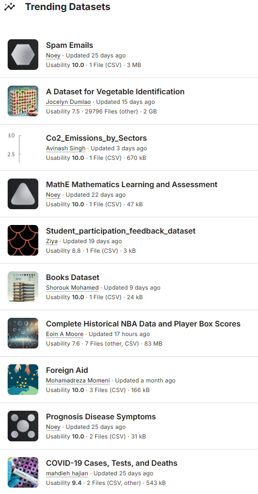
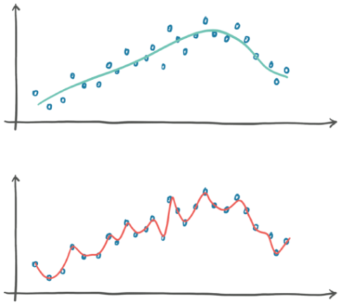
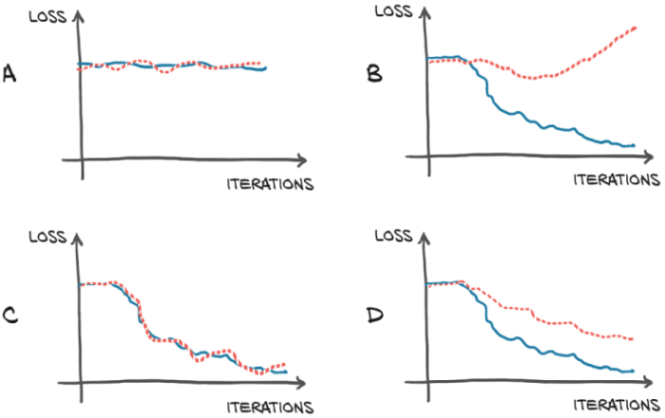

4. Datasets#
Collecting a dataset is typically the most difficult, time-consuming, and expensive part of any edge AI project. It’s also the most likely place you will make terrible, hard-to-detect mistakes that can doom your project to failure. ~ AI at the Edge
4.1. Pre-Reading#
(Critical) Chollet, 2.1 A first look at a neural network and 2.2 Data representations for neural networks
(Bonus) Stevens, Deep Learning with PyTorch, 5.5.3 Training, validation, and overfitting
Objectives#
Describe an ideal dataset for machine learning.
Understand how samples in a dataset can be represented as n-rank tensors.
Distinguish between the functions of train, test, and validation set splits.
List some popular platforms for dataset hosting.
4.2. Last Time#

4.3. What makes a dataset#
See Situnayake and Plunkett’s *AI at the Edge: Chapter 7 How to Build a Dataset for more info.
A dataset contains: samples, each of which may contain many features of various data types. Many datasets also contain labels which are a special kind of feature that indicate the desired output of a trained model for a given sample.
It is common for datasets to have metadata about the dataset itself, such as how the data was collected.
An Ideal Dataset#
An ideal dataset has the following properties:
Relevant to the problem you are trying to solve
Representative of all the various conditions your model might encounter in its real-world task
Balanced quantities of those various conditions
Reliable, containing as few errors as possible
Formatted in a way that it can be easily employed
Documented sufficiently for you to answer the above questions
Appropriately sized to address your problem
Domain Expertise#
Tip
Even with the perfect dataset, it is crucial to consult domain experts to help you understand the data and the context.
Without this, you will likely misunderstand the problem and get undesired outcomes.
Domain experts can help you make sure that your dataset is representative and reliable.
Ethics#
The quality of your dataset will shape your application’s social consequences more than any other factor. No matter how carefully you have worked to investigate the ethical issues around your project, and to design an application that delivers benefit while being safe, the limitations of your dataset dictate your ability to understand and avoid unintentional harm. ~ AI at the Edge
4.4. Representing Datasets as Tensors#
Machine learning datasets cover myriad use-cases and come in numerous forms. For example, here is a screenshot of the trending datasets on Kaggle, an extremely popular platform for hosting ML datasets and models.

Yet, to be useful in training a neural network they must be converted into a regular form upon which we can do math.
All datasets for machine learning must be represented as tensors. WHY??? Because we need to do math on them! (Spoiler alert: Especially dot-products, which GPUs are really good at!)
What is a Tensor?#
At its core, a tensor is a container for data—usually numerical data. So, it’s a container for numbers. You may be already familiar with matrices, which are rank-2 tensors: tensors are a generalization of matrices to an arbitrary number of dimensions (note that in the context of tensors, a dimension is often called an axis). ~ Deep Learning With Python
A tensor is simply an array of numbers arranged along one or more axes.

For a helpful visual breakdown, see Dan Fleisch’s What is a Tensor? (YouTube)
# Create a Rank-3 Tensor in Numpy
import numpy as np
x = np.array(
[
[[5, 78, 2, 34, 0], [6, 79, 3, 35, 1], [37, 8, 58, 36, 11]],
[[5, 78, 2, 34, 0], [6, 79, 3, 35, 1], [37, 8, 0, 2016, 0]],
[[5, 78, 2, 34, 0], [6, 79, 3, 35, 1], [37, 8, 58, 36, 11]],
]
)
print(f"Dimensions: {x.ndim}")
print(f"Shape: {x.shape}")
print(f"Data Type: {x.dtype}")
print(f"Value of item at position (1, 2, 3): {x[1, 2, 3]}")
Dimensions: 3
Shape: (3, 3, 5)
Data Type: int64
Value of item at position (1, 2, 3): 2016
4.5. Real-World examples of data tensors#
See Cholet, Deep Learning with Python, 2nd Ed: 2.2.8-12
In ML datasets axis 0 is the sample axis. Along this axis are batches of multiple samples. Processing data in batches speeds up learning and inference.
The other axes of a tensor are specific to the dataset, but typically fall into:
Vector data: Rank-2 tensors of shape (samples, features), where each sample is a vector of numerical attributes (“features”)
Timeseries data or sequence data: Rank-3 tensors of shape (samples, timesteps, features), where each sample is a sequence (of length timesteps) of feature vectors
Images: Rank-4 tensors of shape (samples, height, width, channels), where each sample is a 2D grid of pixels, and each pixel is represented by a vector of values (“channels”)
Video: Rank-5 tensors of shape (samples, frames, height, width, channels), where each sample is a sequence (of length frames) of images
4.6. Train, Test, & Validation Sets#
We need our trained models to be able to generalize to samples from the world that they’ve never seen before.
See Stevens, Deep Learning with PyTorch, 5.5.3 Training, validation, and overfitting
Training split is used directly to develop an algorithm, typically by training a machine learning model.
Validation split is used to evaluate the model during iterative training
Testing split is kept aside until the very end of training. It is used in a final pass to ensure that the model is able to perform well on data that it has never been exposed to before
Train and Test#
Some datasets are pre-split into test and train.
Some datasets you manually make the split yourself.
For competitions the test set may be kept secret by the host and they will run it against your model without you ever seeing it!
The training set is the part of the dataset we use to optimize our model.
The test set is the part of the dataset we use to evaluate our model.
We want as much data as possible to train against, but we need samples that our model has never seen to evaluate against. Just like how you practice homework problems but an exam has similar problems that you have never seen, rather than identical problems to the homework.
For a standard dataset an 80/20 train/test split is typical. For smaller datasets you may want to reserve more for training while for larger datasets you can devote more to test.
Evaluate#
For labeled data, Keras has the builtin evaluate method:
test_loss, test_acc = model.evaluate(test_images, test_labels)
print(f"test_acc: {test_acc}")
Validation#
What if we were making a model to fit a curve of points in our training set and we came up with two options, shown in blue vs. red below:

Clearly we should go with the blue model because the red one just looks… wrong. The second model is overfitting,
Overfitting a model happens when the model’s performance continues to improve on the training set but degrades on the validation set. This is usually due to the model not generalizing, and instead memorizing the desired outputs for the training set. ~ Stevens, Deep Learning with PyTorch
We can use a validation set to monitor overfitting. The figure below shows training loss as a blue solid line and validation loss as a red dotted line.

When we are training a model we want to see the loss steadily decreasing as we iterate.
A no learning is happening
B overfitting because validation loss is increasing while training loss is decreasing
C ideal, both decreasing
D acceptable, because both decreasing although some overfitting still occurring
For a standard dataset, taking 20% of the already split train set for validation is typical. This means an approximate train/validate/test spilt of 74/16/20 It is critical that all three sets evenly represent all classes.
Using Validation During Training#
In Keras the fit() method includes the following optional parameters:
validation_splitis a fraction of the training data to use for validation and provide its evaluation at the end of each epoch.validation_dataallows you to pass in a pre-split validation set.
# Note that validation_split just takes samples from the end of the dataset, so you need to make sure these are representative.
history = model.fit(
x_train, y_train,
epochs=10,
batch_size=32,
validation_split=0.2
)
4.7. Platforms for Hosting Datasets#
We will see that scikit-learn, TensorFlow, and PyTorch all have datasets included in their libraries. But real datasets are very large and hosted separately.
Popular platforms for hosting datasets:
Example: Refined Web#
The Technology Innovation Institute, a research institution funded by the Abu Dhabi government, created and released the Refined Web Dataset. TII uses Refined Web to train its Falcon family of large language models, which topped the LLM leader boards at one point last year.
RefinedWeb is built through stringent filtering and large-scale deduplication of CommonCrawl; we found models trained on RefinedWeb to achieve performance in-line or better than models trained on curated datasets, while only relying on web data.
This public extract should contain 500-650GT depending on the tokenizer you use, and can be enhanced with the curated corpora of your choosing. This public extract is about ~500GB to download, requiring 2.8TB of local storage once unpacked.
# Don't run this unless you have time snd space for 500GB to download...
from datasets import load_dataset
rw = load_dataset("tiiuae/falcon-refinedweb")
See tiiuae/falcon-refinedweb for more!